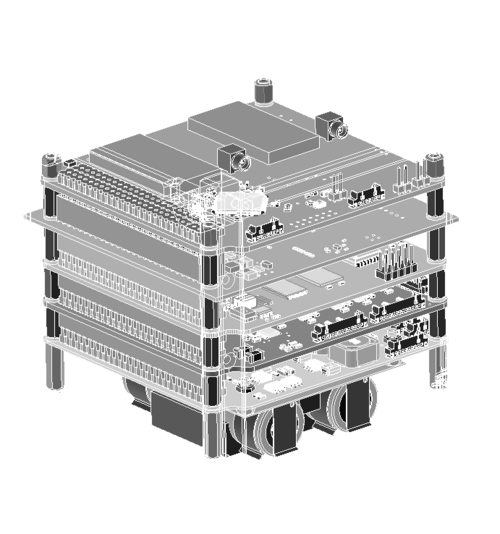
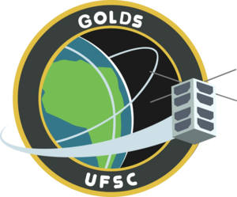
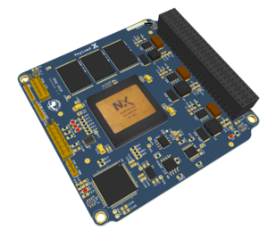

UFSC · Florianópolis · Brazil
Space
Technology
Laboratory
The meeting point for space activities at the Federal University of Santa Catarina — designing, building and flying CubeSats from concept to orbit.
FLORIPASAT-1 Launched 20 DEC 2019
FLORIPASAT-2 Awaiting Launch · CLA
GOLDS-UFSC Amateur Radio Mission
PAYLOAD-XL ESA / GOMX-5 · Rad-Hard FPGA
CATARINA Constellation In Development
ORBIT 300 KM LEO
FLORIPASAT-1 Launched 20 DEC 2019
FLORIPASAT-2 Awaiting Launch · CLA
GOLDS-UFSC Amateur Radio Mission
PAYLOAD-XL ESA / GOMX-5 · Rad-Hard FPGA
CATARINA Constellation In Development
ORBIT 300 KM LEO
2019
First satellite in orbit
// 00 — About the lab
Making space accessible
SpaceLab brings together several research groups from the Federal University of Santa Catarina to conduct research and development in space systems — making space accessible not only to the scientific community, but to industry.
From concept to final product, our team covers every Technology Readiness Level, developing unique custom-built systems for a broad range of space applications.
CubeSats
On-board Computing
RF / Comms
Rad-Hard FPGA
Ground Stations
Microgravity
PWR ████ 98%
● LINK OK
LAT -27.60
LON -48.52

Brand keywords
Innovative
Explorative
Curious
Passionate
Knowledgeable
// 01 — Active missions
Custom systems built for space
[ 05 ongoing / 04 completed ]
FS-2A / FS-2B — Flagship platform
Awaiting Launch
1U / 2U CubeSat Constellation
FloripaSat-2
Two nanosatellites validating a Brazilian CubeSat architecture created by SpaceLab — each with its own power, processing and communication subsystems in commercial bands. Launching from Alcântara Space Center aboard INNOSPACE's HANBIT-TLV into a 300 km LEO.
View mission dossier →
2U · Educational
Integration
2U CubeSat Satellite
GOLDS-UFSC
An educational mission where students design and operate a CubeSat — a digital store-and-forward amateur radio repeater with global coverage, open to any licensed radio amateur.

Know more →
ESA · GOMX-5
In Dev
Rad-Hard FPGA Payload
Payload-XL
Designed at SpaceLab in partnership with ESA/ESTEC for the GOMX-5 mission — a 12U GomSpace satellite — using the BRAVE NG-Large FPGA from NanoXplore.

Know more →
2 × 2U
In Dev
CubeSat Constellation
Catarina
FloripaSat's bus deployed across the Catarina Constellation — twin 2U satellites under active development at SpaceLab.
Know more →
Sub-orbital
In Dev
Sub-Orbital Launch
Microgravity-II
Research and development of scientific payloads designed to fly aboard a sub-orbital flight campaign.
Know more →
1U · Flagship Heritage
In Orbit · 2019
1U CubeSat Satellite
FloripaSat-1
SpaceLab's first satellite — four years of development, launched 20 December 2019 for a 12-month mission. "I'm made of metal…"
Visit FloripaSat-1 →
// 02 — Mission heritage
From genesis to orbit
2009–12
- Genesis of FloripaSat-1
- Microgravity program
- Serpens-I development
- FloripaSat-1 prototype
2014–17
- First Engineering Model
- Serpens-I launch
- Second Engineering Model
2018
- SpaceLab setup
- FloripaSat-1 Flight Model
- Payload-X proto-flight
2019
- AIT & qualification
- Payload-XL development
- GOMX-5 with ESA & GomSpace
- FloripaSat-1 launch!
2020
- FloripaSat-2 mission start
- Microgravity program
2021+
- FloripaSat-2 development
- Payload-XL · GOMX-5 launch
- Catarina Constellation
- More activities soon
// 03 — Ground segment
Find the laboratory
◎ UFSC · Trindade · Florianópolis — SC
Get in
contact
AddressR. Delfino Conti, s/n — Trindade
Florianópolis · SC · 88040-900 · Brazil
InstitutionUniversidade Federal de Santa Catarina
Open contact channel →